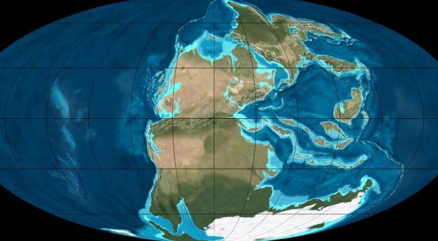
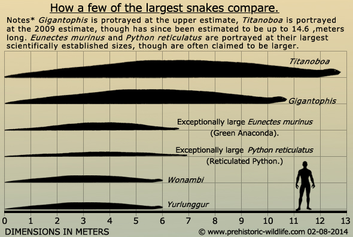
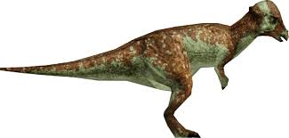

The three types of dinosaurs are herbivore, carnivore, and omnivore.
The dinosaurs lived on Pangaea one big piece of land that was together about
300 million years ago. But later the supercontinent is starting to split up.

The first dinosaur we are goinbg to talk about is the Argentinosaurus is a herbivore. The longest
dinosaur in the world at a length of 130 feet to 140 feet long (40 to 42 meters)
it weights about 90 tons which is 180000 pounds the heavist dinosaur in the world.
The next dinosaur that we are going to talk about is Tyrannosaurs Rex is a
carnivore which that it eats only meat. The height is 15-20 feet and the mass is 13,000-
32,000 pounds. The T-rex's bite force is 57,000 NEWTONS it can bite through bone.
The Tyrannosaurs Rex's nickname was the King of the dinosaurs.

The titanoboa is the largest snake in the world the length of the titanoboa is 50
feet long. It weighed 2,500 pounds= 2 and half tons. The titanoboa eats it prey
whole.

The last dinosaur we are going to talk about is the pachycephalosaurus is a herbivore.
The pachycephalosaurus has a 20 cm skull that is used for defensive. The pachycephalosaurus
is 14.5 ft in length. The pachycephalosaurus is a fast dinosaur so the dinosaur
can us the skull to break the bones of dinosaur.